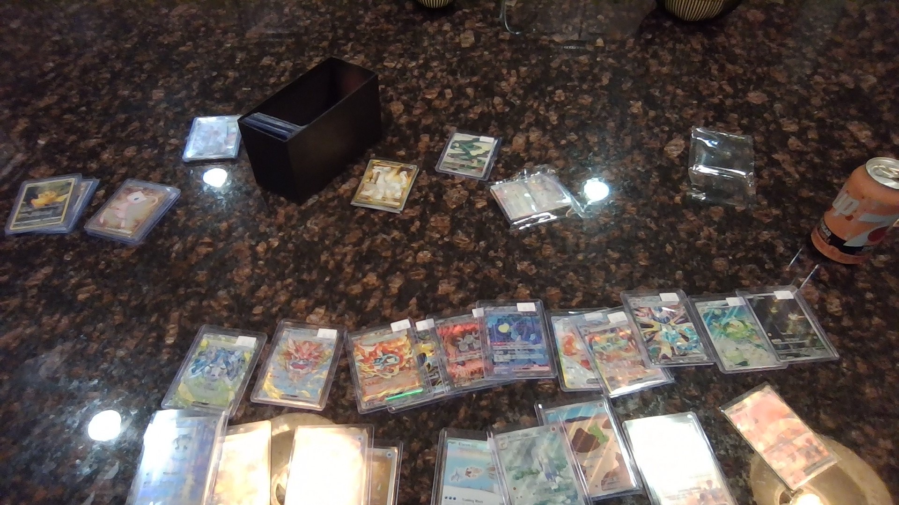
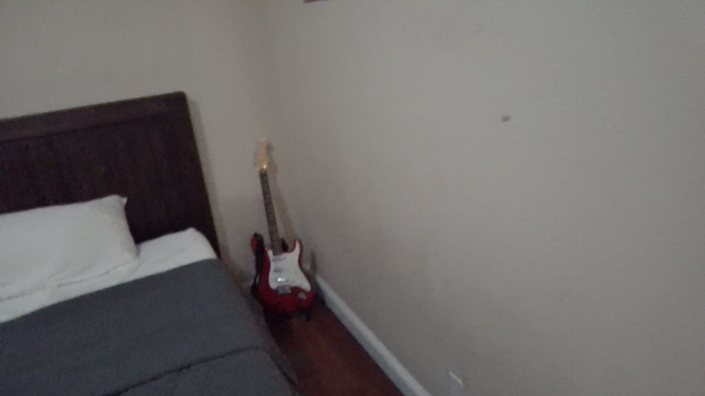
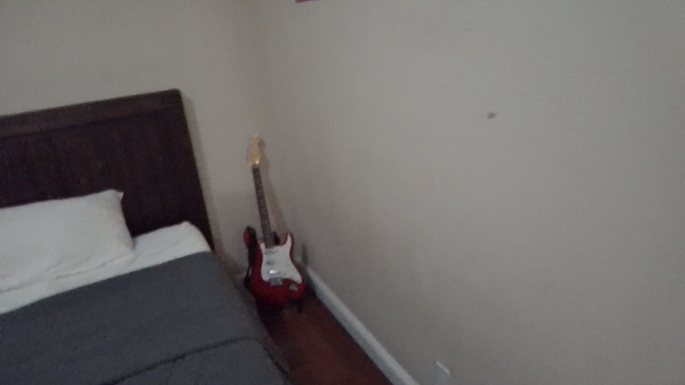

Brandon Barnes
Working as a receptionist at a nail salon has been an invaluable experience that has helped me develop essential skills in customer service, time management, and multitasking. My role required me to be the first point of contact for customers, greeting them with professionalism and warmth while ensuring that their appointments were scheduled efficiently. Managing a busy schedule and handling multiple clients at once taught me the importance of organization and effective communication. I was responsible for answering phone calls, booking appointments, handling customer inquiries, and resolving any scheduling conflicts that arose.
One of the most important aspects of my role was providing excellent customer service. I learned how to address customer concerns professionally, ensuring that every client had a positive experience. This experience has significantly improved my problem-solving skills, as I often had to think on my feet when dealing with last-minute cancellations or overbookings. Additionally, I handled transactions, processed payments, and maintained records of customer visits, which provided me with a foundation in financial transactions and cash handling.
Beyond the administrative duties, working at a nail salon also required me to collaborate closely with nail technicians and other staff members to maintain a smooth workflow. Effective teamwork was crucial in ensuring that customers were attended to promptly and that the salon operated efficiently. This role enhanced my ability to work under pressure, adapt to fast-paced environments, and handle multiple responsibilities simultaneously.
As a business administration student at the University of California, Riverside, my academic journey complements my real-world work experience. Studying business administration has provided me with insights into financial management, marketing strategies, and organizational behavior—concepts that I have been able to apply in my role as a receptionist. For example, understanding customer relationship management has helped me improve interactions with clients, ensuring they receive the best possible service and continue returning to the salon.
At UCR, I have been developing my analytical and problem-solving skills through coursework in finance, accounting, and business operations. My studies have given me a deeper understanding of how businesses function, from budgeting and cost management to marketing and branding. This knowledge has allowed me to look at my receptionist role from a business perspective, analyzing how customer retention strategies and operational efficiency impact the salon’s overall success.
Being a student while working has also taught me valuable time management and prioritization skills. Balancing coursework, exams, and my job has reinforced the importance of discipline, organization, and adaptability. These skills will be essential as I continue to pursue a career in finance, where managing multiple projects and meeting deadlines are critical.
Overall, my experience as a receptionist has provided me with practical customer service and administrative skills, while my business studies at UCR have given me a theoretical foundation in finance and management. Combining these experiences has strengthened my ability to think critically, work efficiently, and contribute to the success of a business. I look forward to applying these skills in future professional roles as I continue my journey toward a career in finance.
Experience
Receotionist
• Learned about Customer service
• Expert at talking to older Women
• Experience with Spreadsheets
Basketball coach
• Helped students get better
• taught the importance of teamwork
Education
UC Riverside
Portfolio




